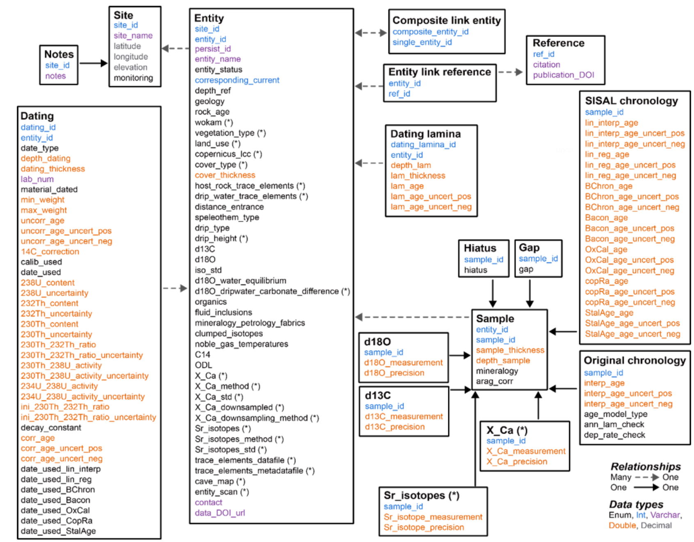
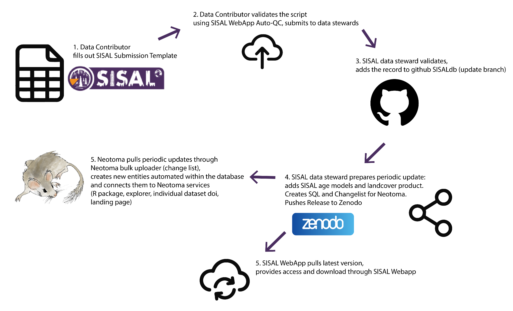
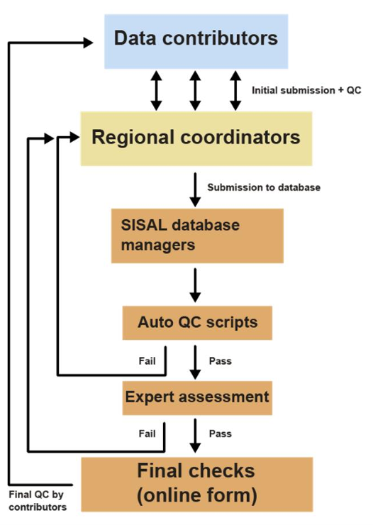
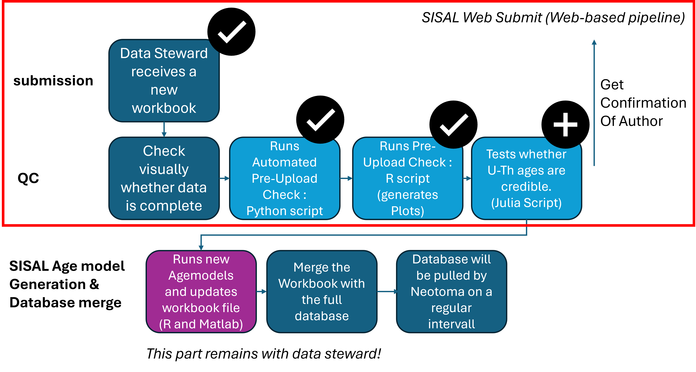

About the Project
Online Supplement Material
This page provides comprehensive background information on the SISAL database and the development of the SISAL Web Submit application. It details the scientific context of speleothem data curation, the community-driven living data workflow, the transition from local terminal scripts to a robust web-based architecture, and acknowledges the researchers and developers who made this project possible. Use the links below to quickly navigate to the different sections of this documentation.
Step-by-Step Submission Tutorial
Are you a first-time data contributor or looking for a detailed guide? Explore our interactive tutorial for comprehensive, step-by-step instructions, practical tips, and visual examples covering the entire submission workflow.
Introduction
Speleothems (stalagmites, stalactites and flowstones) are calcium carbonate deposits that grow layer by layer in caves over hundreds to hundreds of thousands of years. They are among the best-dated terrestrial climate archives: radiometric U-series dating provides precise age control, and the oxygen and carbon isotope composition and trace-element content of the carbonate record past hydroclimate conditions. Because speleothems are distributed worldwide, they allow regional to global reconstructions of past changes in atmospheric circulation and hydroclimate and provide a benchmark for climate-model evaluation.
The Speleothem Isotopes Synthesis and AnaLysis (SISAL) working group was founded in 2017 under the umbrella of the Past Global Changes (PAGES) project. The working group aims to provide a comprehensive compilation of speleothem isotope records for climate reconstruction and model evaluation. SISAL is an international, community-curated effort: a single relational database, a standardised metadata scheme, a common quality-control (QC) procedure and standardised age models make records from many laboratories directly comparable and re-usable.
The most recent release, SISALv3.1N, is the first version that is maintained as a living database and is integrated into the Neotoma Paleoecology Database as a constituent database. It comprises isotope and trace-element data and chronologies from 903 speleothem entities at 365 cave sites. The submission workflow documented on this page, and the web application that implements its quality-control step, are part of this evolving living-database framework.
Publications
Since 2018, four versions of the speleothem stable-isotope database have been published, each accompanied by a data description paper (Table S1). SISALv3.0 additionally introduced speleothem trace-element records and strontium isotopes, together with downsampling scripts that bring high-resolution trace-element data onto the isotope depth scale.
| Version | Year | Content | Novelty | Reference |
|---|---|---|---|---|
| v1.0 | 2018 | 381 speleothem records | Schema, database | Atsawawaranunt et al. (2018), Earth Syst. Sci. Data, 10, 1687-1713, doi:10.5194/essd-10-1687-2018 |
| v1b | 2019 | 455 speleothem records | Atsawawaranunt et al. (2019, dataset); figures as reported in Comas-Bru et al. (2020) | |
| v2.0 | 2020 | 691 records (673 δ18O, 430 δ13C) | Standardised SISAL age models | Comas-Bru et al. (2020), Earth Syst. Sci. Data, 12, 2579-2606, doi:10.5194/essd-12-2579-2020 |
| v3.0 | 2024 | 892 δ18O and 620 δ13C records; 95 Mg/Ca, 85 Sr/Ca, 52 Ba/Ca, 25 U/Ca, 29 P/Ca and 14 Sr-isotope records | Trace elements, downsampling scripts, Sr isotopes | Kaushal et al. (2024), Earth Syst. Sci. Data, 16, 1933-1963, doi:10.5194/essd-16-1933-2024 |
| v3.1N | 2026 | 903 entities, 29 relational tables | Integration with Neotoma, improved QC, git-based workflow for periodic updates | Endres et al. (In prep.) |
Table S1. Published versions of the SISAL database.
Related publications:
- Williams, J. W., Kaufman, D., Newton, A., and Von Gunten, L. (2018), Building open data: Data stewards and community-curated data resources, Past Global Changes Mag., 26, 50-51, doi:10.22498/pages.26.2.50
From Static Releases to a Living Data System
Like many working-group databases, SISAL was initially published as a series of static versions. Each release required substantial volunteer effort by a small group of data stewards and supporting scientists, who had to curate the data and maintain the supporting data services at the same time. This slowed the release cadence and increased the latency between newly published speleothem research and its availability in the database.
SISALv3.1N addresses these needs by reducing the latency between published research and the database, lowering the workload of data stewards, providing clearer pathways for researchers to contribute, and integrating SISAL with the wider paleo-data ecosystem. The data schemas were aligned and the data were imported into Neotoma with its bulk-upload system (DataBUS). The live database is maintained in a public GitHub repository (SISALdb/SISALdb).
Database Structure
SISAL is a relational database (Figure S1).
Its core unit is the entity: a single speleothem specimen from which a consistent dataset originates.
The entity table holds rich metadata and is linked upwards to the cave site and to the publications
(reference), and downwards, via the entity_id, to the dating and sample tables.
Each sample represents one geochemical measurement (δ18O, δ13C, or a trace-element ratio such as
Mg/Ca, Sr/Ca, Ba/Ca, U/Ca, P/Ca or the Sr isotopes) and is positioned by its depth from the top of the specimen. Chronologies are
attached to the individual samples: both the original author age model and the standardised SISAL age models are stored.
Hiatuses and growth gaps, laminae counts and the composite records assembled from several entities are modelled in dedicated tables.
The data model of SISALv3.1N was extended to support the living-database workflow. Additional tables record people, projects, database releases and code versions, so that the contribution of each person to a specific release or science project is explicit and the age-model and QC pipeline that produced a release is documented.

Database Update Workflow
New records enter SISAL through a standardised submission workbook, available as an Excel template in the SISALdb/submission_v15 repository. Data can be submitted by the author of the original study or by an independent data contributor, for example a regional coordinator.
The workflow (Figure S2) proceeds as follows. The contributor fills out the submission workbook and checks it with the automated QC, which is available through the SISAL Web Submit application described in the next chapter. The workbook and the QC report are then passed to a SISAL data steward, who checks the data visually and adds the record to the live database on GitHub. Standardised SISAL age models and site-level products (such as karst lithology and land cover) are added for every new or modified entity. Periodically, every 6-12 months a release is created, archived on Zenodo with a minted DOI, and the changes are transferred to Neotoma via its bulk-upload system. Contributor files are never edited. Every received version is archived unchanged, and all data-steward corrections are made in derived copies with a cell-level change log.

SISAL Community
SISAL has been community-driven from the start. An initial workshop in 2017 led to a regional-coordinator framework, in which researchers working in the different parts of the world took responsibility for curating the records of their regions, supported by automated and manual quality checks. The community was incentivised through authorship on the database papers and through open invitations to work on SISAL science projects. In the current model, the dependence on a team of more than 30 regional coordinators for data entry and quality checks is reduced: a small number of rotating data stewards curate and release the data, while contributors are supported by freely accessible infrastructure for data entry and validation.
Data Stewards
Check submitted workbooks, add new entities to the live database, compute the standardised age models and prepare the periodic releases. Responsibility for the next release is shared between two stewards.
Regional Coordinators
Researchers who represent a geographic region, compile and curate records from publications of that region, and submit them as data contributors.
To make individual contributions visible, SISALv3.1N introduces contributor roles that can be assigned for a database release or for a science project (Table S2). Two roles can submit data: the author of a publication that generated speleothem data, and a data contributor who fills out the submission workbook on the basis of an existing publication.
| Role | Description |
|---|---|
| release_steward | Owns a specific release: merges submissions, runs the age models and produces the release. |
| data_curator | Reviews and corrects the data going into a release (coordinate fixes, vocabulary and metadata QC, flagged issues). |
| workflow_developer | Builds or maintains the pipelines and tooling used to produce a release (QC scripts, age-model pipeline, SQL generation). |
| project_lead | Leads a thematic science project that feeds data into one or more releases. |
| data_contributor | Anyone who contributed underlying data (entities) to a given release or project; derived automatically from the database. |
Table S2. Contributor and stewardship roles in SISALdb.
Authors
The SISAL-Neotoma workflow and the SISALv3N+ living database are described in a manuscript in preparation. The author list given in the current manuscript draft are:
Laura Endres1, Nikita Kaushal2, Socorro Dominguez3, John W. Williams3, Simon Goring3, Jens Fohlmeister4, Franziska Lechleitner5, István Gábor Hatvani6,7,8, Gergő Rabi-Nagy6,7, Zoltán Kern6,7, Heather Stoll1, Emmanuel Pestalozzi, Sandra Bernegger and the SISAL working group members.
- Department of Earth and Planetary Sciences (EAPS), ETH Zürich, Zürich, Switzerland
- American Museum of Natural History, New York, NY, USA
- Department of Geography and Center for Climatic Research, University of Wisconsin-Madison, Madison, WI, USA
- GFZ German Research Centre for Geosciences, Potsdam, Germany
- Swiss Federal Institute for Forest, Snow and Landscape Research WSL, Birmensdorf, Switzerland
- Institute for Geological and Geochemical Research, HUN-REN Research Centre for Astronomy and Earth Sciences, Budapest, Hungary
- HUN-REN CSFK, MTA Centre of Excellence, Budapest, Hungary
- Institute of Geography and Environmental Sciences, Esterházy Károly University, Eger, Hungary
Overview
Project RepositoryThe SISAL database is a critical global resource for paleoclimate reconstructions. However, ensuring the structural integrity and scientific accuracy of newly submitted data has historically been a complex bottleneck. The SISAL Web Submit project directly addresses this challenge by transforming the previously decentralized, local validation pipeline into a robust, unified web-based application. It provides a centralized, user-friendly interface specifically designed to streamline the uploading, auditing, and scientific validation of speleothem records. By moving the intricate Quality Control infrastructure to a managed server, the application completely eliminates the need for contributors to set up local environments, resolve software dependencies, or manually execute command-line scripts. This transition not only facilitates the submission process, making it highly accessible for researchers across all technical backgrounds, but also guarantees that every dataset is evaluated against a standardized set of rules before reaching the database managers.
Step-by-Step Submission Tutorial
Are you a first-time data contributor or looking for a detailed guide? Explore our interactive tutorial for comprehensive, step-by-step instructions, practical tips, and visual examples covering the entire submission workflow.
Motivation for a Web-Based Transition
Historically, the data submission process relied on manual script execution on local machines (Figure S3). Contributors filled out Excel workbooks and submitted them through regional coordinators, after which automated Quality Control (QC) scripts and expert assessments were run iteratively. This setup required users to manually configure directory hierarchies and install complex Python and R environments, often leading to software dependency conflicts. Furthermore, executing scripts locally introduced version-control risks and relied on a command-line interface that was difficult for non-technical users to troubleshoot.

By transitioning to a centralized web application, the validation process runs on a managed server environment. This guarantees strict version control ensuring every submission is validated against the exact same rules and replaces terminal execution with a user-friendly browser interface.
Benefits for the Community
Data Contributors
Eliminates local environment configuration and terminal command usage. Provides clear, structured, step-by-step diagnostic feedback directly in the browser to resolve workbook formatting issues easily.
Data Stewards
Ensures high data quality without manual auditing overhead. Receiving standardized, pre-validated submission packages with pre-generated plots significantly accelerates database curation and release cycles.
Future development phases may aim to eliminate the manual step of emailing the final .zip archive
to database managers. Planned enhancements include an SMTP-based forwarding system that automatically securely
sends the validated data payload to the Data Stewards. Furthermore, advanced integration could allow the application
to automatically open a GitHub Pull Request containing pre-generated SQL/CSV extracts and embedded plots, centralizing
the curation workflow and drastically simplifying future database updates.
Submission Workflow Overview
The updated submission workflow (Figure S4) is designed as a simple, step-by-step process. Contributors are guided through the following four stages:
Stage 1: Upload
The contributor selects and uploads their completed SISAL v15 Excel workbook via a secure web form. A quick CAPTCHA verification ensures the system remains protected from automated bots.
Stage 2: Validation
The application runs automated structural and scientific checks on the data. The contributor can monitor the progress and then review a clear, categorized diagnostic summary (Informative, Warnings, Errors) directly in the browser. If no critical errors are found, the submission is accepted as valid and can proceed.
Stage 3: Plotting
The application automatically generates age models, potential hiatuses, and proxy time-series graphs based on the validated data. The contributor can visually inspect these plots directly on the webpage to ensure the data is represented correctly.
Stage 4: Download and Finalization
The contributor downloads a single .zip package containing the QC-passed workbook, a compiled PDF of all
generated plots, a regional site map, and a detailed human-readable diagnostic report. Finally, the user forwards this
complete package to the SISAL Data Stewards.
Enhanced Scientific Validation: U-Th Credibility Check
Coinciding with the transition to a web-based architecture, the validation stage was significantly expanded with a new scientific assessment: the U-Th age credibility check. This methodology independently recalculates U-Th ages directly from the submitted isotope ratios and concentrations, subsequently comparing these calculated values against the corrected and uncorrected ages reported by the authors. This independent verification is highly beneficial for the scientific community, as it automatically identifies hidden data-entry anomalies such as mistakenly submitting atomic ratios instead of activity ratios, or utilizing mismatched decay constants. By integrating this automated safeguard, the reliability and consistency of the geochronological data entering the SISAL database are substantially improved.

Overview
Project RepositoryThe SISAL Web Submit application is built on a modern, decoupled web architecture designed for modularity, statelessness, and high execution safety. The frontend provides a clean, responsive user interface built with HTML5, Bootstrap 5, and vanilla JavaScript, while the backend is powered by Python and the high-performance FastAPI framework. Because the application is strictly stateless, session management and temporary data isolation are handled directly on the server's file system by creating isolated working directories for each upload session.
To achieve a clear separation of concerns, the backend logic is partitioned into dedicated single-responsibility modules covering file ingestion, scientific validation, age-model and proxy plotting, and download bundle finalization. Legacy QC Python scripts and R visualization pipelines are executed as asynchronous subprocesses. Real-time feedback is streamed directly to the frontend using JSON status objects and diagnostic logs, eliminating the need for complex database overhead while preserving full system responsiveness.
Technology Stack
Software Dependencies and Packages
The core web application, alongside its embedded validation and plotting engines, relies on a curated set of open-source Python and R packages:
-
Web Framework:
FastAPI: RESTful routing and asynchronous responsesUvicorn: ASGI web serverPydantic: data parsing and validation schemaspython-multipart: file upload handling
-
Python Scientific and Data Processing Stack:
pandas: Excel table parsing and structured data manipulationnumpy&scipy: numerical routines and root-finding algorithmsopenpyxl: workbook inspectionmatplotlib&cartopy: regional site map renderingshapely: spatial geometric validation
-
R Visualization Process:
ggplot2: rendering time-series and age-model graphsgridExtra&ggpubr: multi-panel plot arrangementreadxl: ingesting validated Excel datadplyr: data transformation for plotting routines
Execution Flowchart
The execution flowchart (Figure S5) details the step-by-step lifecycle of a session, tracing data flow from security ingestion to final archive assembly.

The SISAL Web Submit project is a collaborative effort bridging modern web engineering with robust paleoclimate data science. The application builds upon months of community-driven script development, integrating these scientific tools into a seamless online platform.
Gergő Rabi-Nagy1,2
Web Application & System Architecture
Development of the interactive web application and browser-based validation procedure.
K. Atsawawaranunt3, L. Comas-Bru3, E. Pestalozzi4, I. Hatvani1,2,5, L. Endres4
Core Validation Pipeline (Python & R Scripts)
Authors of the original local validation workflow, structural/scientific validation scripts and the R-based plotting tools.
J. Fohlmeister6
Core Validation Pipeline (Python & R Scripts)
Developer of the original U-Th check logic in Julia (subsequently ported to the Python pipeline).
- Institute for Geological and Geochemical Research, HUN-REN Research Centre for Astronomy and Earth Sciences, Budapest, Hungary
- HUN-REN CSFK, MTA Centre of Excellence, Budapest, Hungary
- School of Archaeology, Geography and Environmental Sciences, University of Reading, Reading, UK
- Department of Earth and Planetary Sciences (EAPS), ETH Zürich, Zürich, Switzerland
- Institute of Geography and Environmental Sciences, Esterházy Károly University, Eger, Hungary
- GFZ German Research Centre for Geosciences, Potsdam, Germany